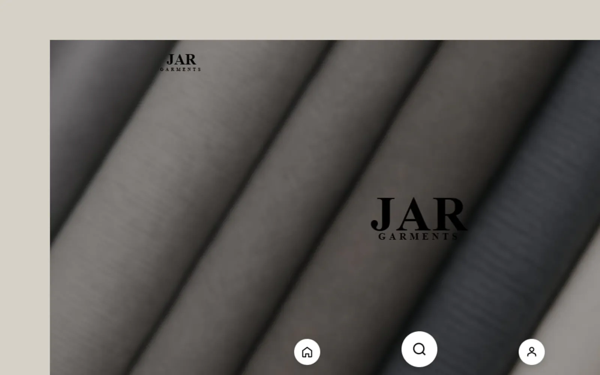
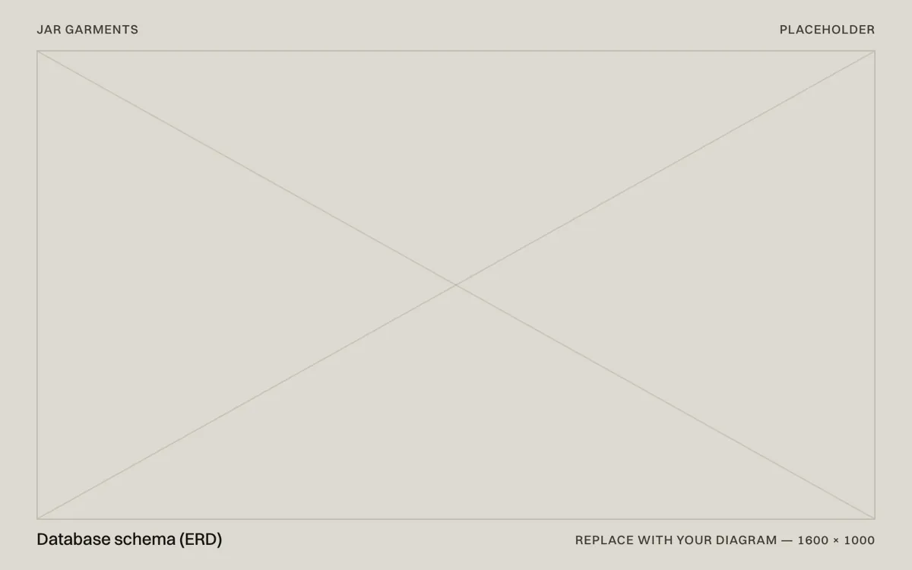
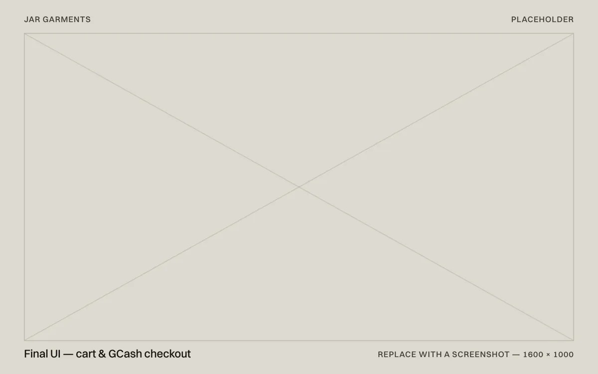
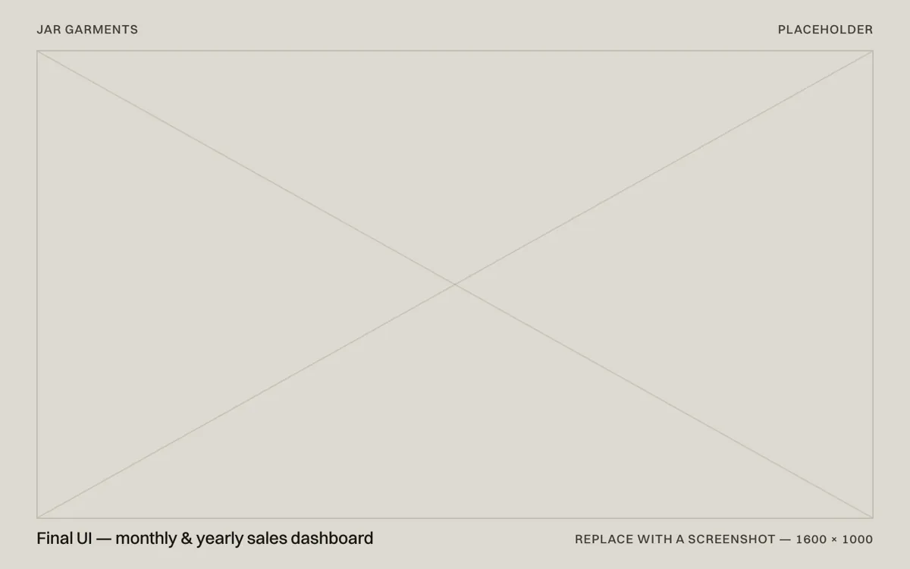

Case study 01 / 03 — Freelance
JAR Garments
An e-commerce system with GCash payments, order tracking and sales analytics for a custom-garment business.
- Role
- Web developer (freelance)
- Timeline
- May–Sep 2025, 5 months
- Client
- JAR Garments, custom clothing
- Platform
- Responsive web app
- Stack
- PHP, MySQL, JavaScript, Bootstrap, GCash

At a glance
- Problem
- Customers needed to choose a design, order and pay without the back-and-forth. The owner needed one place to see orders and sales.
- Solution
- A PHP and MySQL e-commerce system: storefront, cart, GCash checkout, customer accounts and an admin dashboard.
- Outcome
- A working store that handles real customer orders and GCash payments, with monthly and yearly sales in one view.
01 — Context
A made-to-order business that needed to sell online
JAR Garments makes custom clothing. Every order starts with a choice — which design, which size, how many — and ends with a payment and a delivery.
TODO(john):Add one or two sentences on how orders and payments were handled before this project — chat messages, walk-ins, a notebook or spreadsheet — and what that cost the owner.
The brief: let customers pick a design, order and pay online, and give the owner a clear picture of the business without complicated software.
Constraints
- A small-business budget — the store had to run on low-cost hosting.
- A storefront that works as well on a phone as on a laptop.
- An owner who needs clear numbers, not raw tables.
02 — Requirements
What the system had to do
Before writing code, I listed what each side of an order needed — the customer placing it and the owner fulfilling it.
Orders start with a design.Customers pick a specific garment first, so designs, sizes and quantities had to be modelled cleanly.
Payments are recorded, not just taken.Every GCash payment is tied to its order, so the owner can see what’s paid and what isn’t.
Reports by month and by year.The owner reviews sales by period, so the analytics add orders up instead of listing every row.
Customer flow
- 01Browse designs
- 02Choose design & size
- 03Add to cart
- 04Check out
- 05Pay with GCash
- 06Track the order
Owner flow
- 01Receive the order
- 02Update its status
- 03Review monthly & yearly sales
03 — System design
Modelling the data first
The database came before the screens: designs and products, customers, orders and their items, and payments. The sales reports are queries over those same tables, so the numbers always match the orders.

TODO(john):Add your ERD, or a short note on the main tables and anything you changed while building — a table you split, a status you added.
04 — Features
What customers and the owner get
Every screen does one job: choose, pay or manage.
Feature 01
Design-first storefront
Customers browse the garment designs first, then choose size and quantity.
Feature 02
GCash checkout
Payment happens in one familiar GCash step, and each order is stored with its payment.
Feature 03
Owner dashboard
Orders, customers and monthly & yearly sales in a single admin view.


05 — Build
How it’s built
One PHP and MySQL codebase runs the storefront, checkout, accounts and admin dashboard.
- StorefrontResponsive layout in HTML, CSS and Bootstrap, with JavaScript for the cart.
- PaymentsGCash integration at checkout, with each order’s payment recorded.
- OrdersAn order management dashboard for the owner.
- AccountsCustomer accounts for placing and following orders.
- AnalyticsMonthly and yearly sales, calculated in MySQL.
06 — Results
What changed
The store handles real customer orders and GCash payments, and the owner reviews monthly and yearly sales from one dashboard.
- Orders placed online in the first [N] months
- [00]
- Share of orders paid with GCash
- [00]%
- From first brief to a working store
- 5 mo.
TODO(john):Replace the bracketed figures with real numbers — or swap them for the owner’s own words about what changed.
07 — Reflection
What I’d do next
Add automated tests around checkout.Payments are the one part that can’t break; tests would catch regressions before customers do.
Send order-status updates.So customers don’t have to message the shop to ask where their order is.
Track failed and abandoned payments.So problems at checkout show up in the logs, not in customer messages.